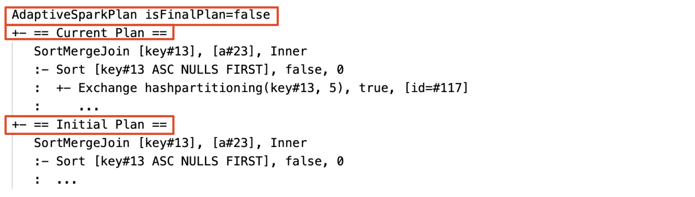
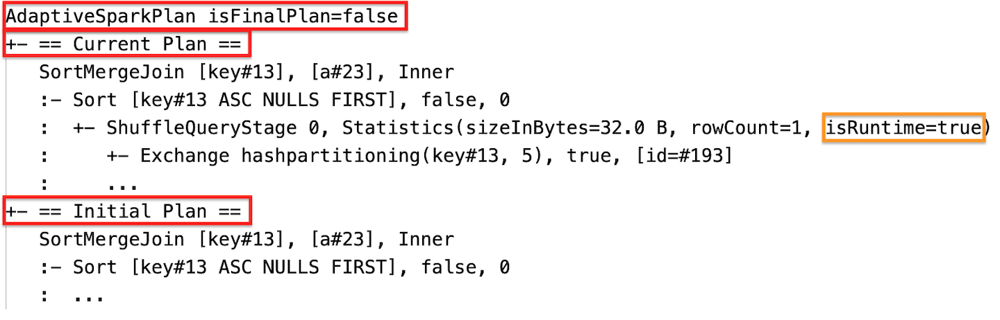
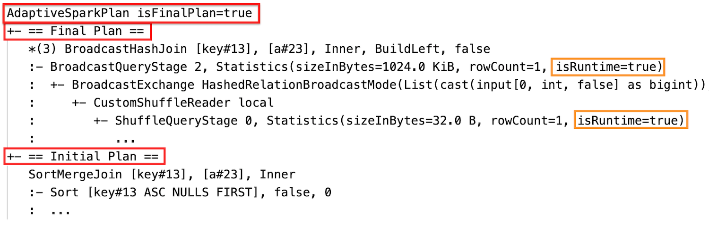
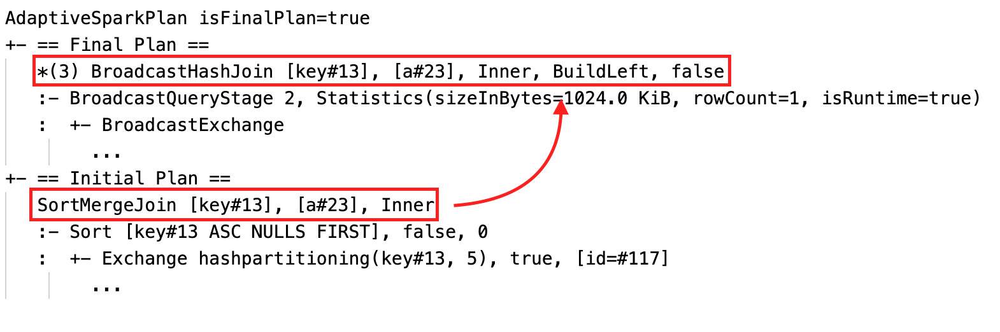
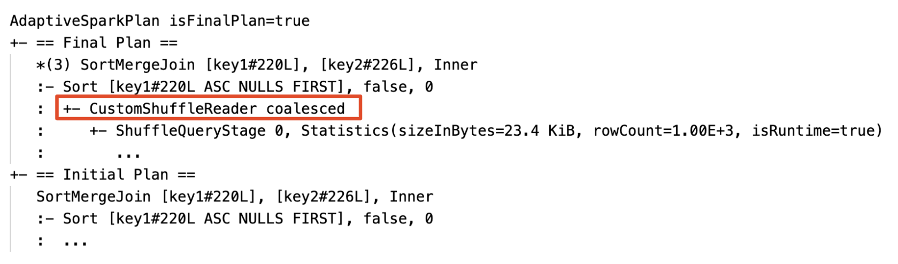
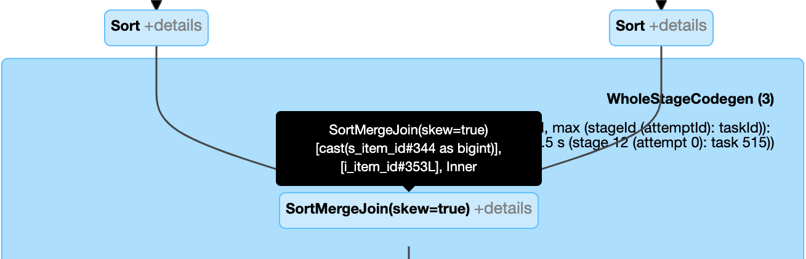
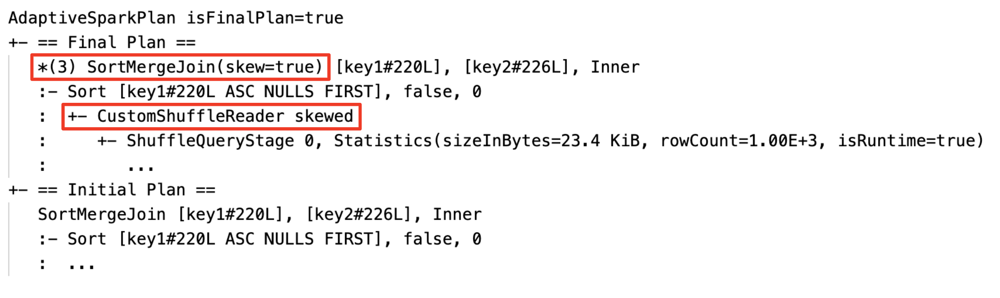
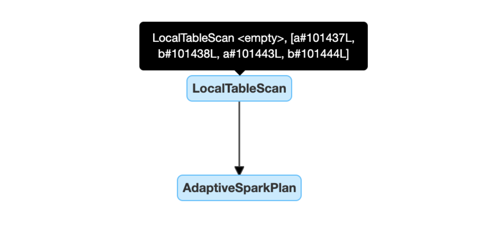
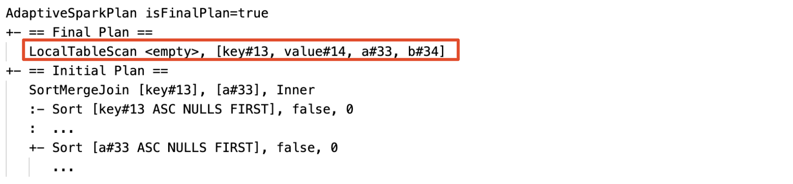

Adaptive query execution
Adaptive query execution (AQE) is query re-optimization that occurs during query execution.
The motivation for runtime re-optimization is that Databricks has the most up-to-date accurate statistics at the end of a shuffle and broadcast exchange (referred to as a query stage in AQE). As a result, Databricks can opt for a better physical strategy, pick an optimal post-shuffle partition size and number, or do optimizations that used to require hints, for example, skew join handling.
This can be very useful when statistics collection is not turned on or when statistics are stale. It is also useful in places where statically derived statistics are inaccurate, such as in the middle of a complicated query, or after the occurrence of data skew.
Capabilities
AQE is enabled by default. It has 4 major features:
Dynamically changes sort merge join into broadcast hash join.
Dynamically coalesces partitions (combine small partitions into reasonably sized partitions) after shuffle exchange. Very small tasks have worse I/O throughput and tend to suffer more from scheduling overhead and task setup overhead. Combining small tasks saves resources and improves cluster throughput.
Dynamically handles skew in sort merge join and shuffle hash join by splitting (and replicating if needed) skewed tasks into roughly evenly sized tasks.
Dynamically detects and propagates empty relations.
Application
AQE applies to all queries that are:
Non-streaming
Contain at least one exchange (usually when there’s a join, aggregate, or window), one sub-query, or both.
Not all AQE-applied queries are necessarily re-optimized. The re-optimization might or might not come up with a different query plan than the one statically compiled. To determine whether a query’s plan has been changed by AQE, see the following section, Query plans.
Query plans
This section discusses how you can examine query plans in different ways.
In this section:
Spark UI
AdaptiveSparkPlan node
AQE-applied queries contain one or more AdaptiveSparkPlan nodes, usually as the root node of each main query or sub-query.
Before the query runs or when it is running, the isFinalPlan flag of the corresponding AdaptiveSparkPlan node shows as false; after the query execution completes, the isFinalPlan flag changes to true.
Evolving plan
The query plan diagram evolves as the execution progresses and reflects the most current plan that is being executed. Nodes that have already been executed (in which metrics are available) will not change, but those that haven’t can change over time as the result of re-optimizations.
The following is a query plan diagram example:
DataFrame.explain()
AdaptiveSparkPlan node
AQE-applied queries contain one or more AdaptiveSparkPlan nodes, usually as the root node of each main query or sub-query. Before the query runs or when it is running, the isFinalPlan flag of the corresponding AdaptiveSparkPlan node shows as false; after the query execution completes, the isFinalPlan flag changes to true.
Current and initial plan
Under each AdaptiveSparkPlan node there will be both the initial plan (the plan before applying any AQE optimizations) and the current or the final plan, depending on whether the execution has completed. The current plan will evolve as the execution progresses.
Runtime statistics
Each shuffle and broadcast stage contains data statistics.
Before the stage runs or when the stage is running, the statistics are compile-time estimates, and the flag isRuntime is false, for example: Statistics(sizeInBytes=1024.0 KiB, rowCount=4, isRuntime=false);
After the stage execution completes, the statistics are those collected at runtime, and the flag isRuntime will become true, for example: Statistics(sizeInBytes=658.1 KiB, rowCount=2.81E+4, isRuntime=true)
The following is a DataFrame.explain example:
Before the execution
During the execution
After the execution

SQL EXPLAIN
Effectiveness
The query plan will change if one or more AQE optimizations take effect. The effect of these AQE optimizations is demonstrated by the difference between the current and final plans and the initial plan and specific plan nodes in the current and final plans.
Dynamically change sort merge join into broadcast hash join: different physical join nodes between the current/final plan and the initial plan
Dynamically coalesce partitions: node
CustomShuffleReaderwith propertyCoalescedDynamically handle skew join: node
SortMergeJoinwith fieldisSkewas true.Dynamically detect and propagate empty relations: part of (or entire) the plan is replaced by node LocalTableScan with the relation field as empty.

Configuration
In this section:
Enable and disable adaptive query execution
Property |
|---|
spark.databricks.optimizer.adaptive.enabled Type: Whether to enable or disable adaptive query execution. Default value: |
Enable auto-optimized shuffle
Property |
|---|
spark.sql.shuffle.partitions Type: The default number of partitions to use when shuffling data for joins or
aggregations. Setting the value Note: For Structured Streaming, this configuration cannot be changed between query restarts from the same checkpoint location. Default value: 200 |
Dynamically change sort merge join into broadcast hash join
Property |
|---|
spark.databricks.adaptive.autoBroadcastJoinThreshold Type: The threshold to trigger switching to broadcast join at runtime. Default value: |
Dynamically coalesce partitions
Property |
|---|
spark.sql.adaptive.coalescePartitions.enabled Type: Whether to enable or disable partition coalescing. Default value: |
spark.sql.adaptive.advisoryPartitionSizeInBytes Type: The target size after coalescing. The coalesced partition sizes will be close to but no bigger than this target size. Default value: |
spark.sql.adaptive.coalescePartitions.minPartitionSize Type: The minimum size of partitions after coalescing. The coalesced partition sizes will be no smaller than this size. Default value: |
spark.sql.adaptive.coalescePartitions.minPartitionNum Type: The minimum number of partitions after coalescing.
Not recommended, because setting explicitly overrides
Default value: 2x no. of cluster cores |
Dynamically handle skew join
Property |
|---|
spark.sql.adaptive.skewJoin.enabled Type: Whether to enable or disable skew join handling. Default value: |
spark.sql.adaptive.skewJoin.skewedPartitionFactor Type: A factor that when multiplied by the median partition size contributes to determining whether a partition is skewed. Default value: |
spark.sql.adaptive.skewJoin.skewedPartitionThresholdInBytes Type: A threshold that contributes to determining whether a partition is skewed. Default value: |
A partition is considered skewed when both (partition size > skewedPartitionFactor * median partition size) and (partition size > skewedPartitionThresholdInBytes) are true.
Dynamically detect and propagate empty relations
Property |
|---|
spark.databricks.adaptive.emptyRelationPropagation.enabled Type: Whether to enable or disable dynamic empty relation propagation. Default value: |
Frequently asked questions (FAQ)
In this section:
Why didn’t AQE broadcast a small join table?
If the size of the relation expected to be broadcast does fall under this threshold but is still not broadcast:
Check the join type. Broadcast is not supported for certain join types, for example, the left relation of a
LEFT OUTER JOINcannot be broadcast.It can also be that the relation contains a lot of empty partitions, in which case the majority of the tasks can finish quickly with sort merge join or it can potentially be optimized with skew join handling. AQE avoids changing such sort merge joins to broadcast hash joins if the percentage of non-empty partitions is lower than
spark.sql.adaptive.nonEmptyPartitionRatioForBroadcastJoin.
Should I still use a broadcast join strategy hint with AQE enabled?
Yes. A statically planned broadcast join is usually more performant than a dynamically planned one by AQE as AQE might not switch to broadcast join until after performing shuffle for both sides of the join (by which time the actual relation sizes are obtained). So using a broadcast hint can still be a good choice if you know your query well. AQE will respect query hints the same way as static optimization does, but can still apply dynamic optimizations that are not affected by the hints.
What is the difference between skew join hint and AQE skew join optimization? Which one should I use?
It is recommended to rely on AQE skew join handling rather than use the skew join hint, because AQE skew join is completely automatic and in general performs better than the hint counterpart.
Why didn’t AQE adjust my join ordering automatically?
Dynamic join reordering is not part of AQE.
Why didn’t AQE detect my data skew?
There are two size conditions that must be satisfied for AQE to detect a partition as a skewed partition:
The partition size is larger than the
spark.sql.adaptive.skewJoin.skewedPartitionThresholdInBytes(default 256MB)The partition size is larger than the median size of all partitions times the skewed partition factor
spark.sql.adaptive.skewJoin.skewedPartitionFactor(default 5)
In addition, skew handling support is limited for certain join types, for example, in LEFT OUTER JOIN, only skew on the left side can be optimized.
Legacy
The term “Adaptive Execution” has existed since Spark 1.6, but the new AQE in Spark 3.0 is fundamentally different. In terms of functionality, Spark 1.6 does only the “dynamically coalesce partitions” part. In terms of technical architecture, the new AQE is a framework of dynamic planning and replanning of queries based on runtime stats, which supports a variety of optimizations such as the ones we have described in this article and can be extended to enable more potential optimizations.